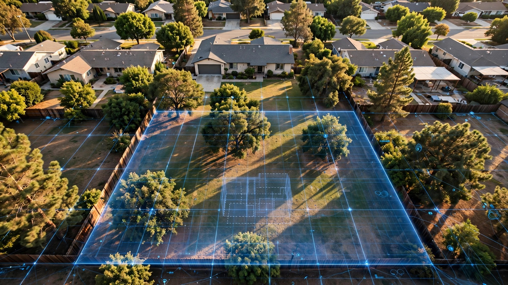

You Paid an Architect $12,000 to Find Out Your Lot Can't Hold an ADU. An Algorithm Knew in Nine Seconds.

A homeowner in Pasadena hired an architect last spring to design a detached ADU in her backyard. Six weeks and $11,400 later, the architect delivered a finding that had nothing to do with design: the lot's rear setback, combined with a utility easement she didn't know existed, left a buildable footprint roughly the size of a parking space, and not a single line of the floor plan had been drawn.
She is not unusual. California's Housing Committee reports that an estimated 1.8 million parcels in the state have market feasibility for an accessory dwelling unit, and over 23,000 were legally completed in 2023, a twentyfold increase from fewer than 1,200 in 2016. That surge brought a corresponding wave of homeowners spending $5,000 to $15,000 on architectural design and consultation fees just to answer a question that precedes design entirely: can I build here?
An expanding set of AI-powered tools answers that question in seconds, from publicly available zoning data and satellite imagery, for a fraction of the cost. Most homeowners have never heard of them.
Before Architecture Comes Feasibility
Building an ADU is not cheap. A detached unit runs $110,000 to $285,000, according to Angi's 2026 cost data, and design alone accounts for 10 to 15 percent of the total project budget. On a $150,000 ADU, that is $15,000 to $22,500, a sum that includes work only worth doing if the lot can physically and legally accommodate the structure in the first place.
Feasibility is deceptively complicated, because it involves setback requirements that vary by zoning district, lot coverage limits that cap how much of your property can be under a roof, overlay zones that impose additional constraints for fire severity or historic preservation or coastal access, easements that restrict building in utility corridors, slope and grade conditions that trigger costly structural requirements, and infrastructure proximity that determines whether sewer, water, and electrical connections are practical. Miss any one of these and the project stalls during plan check, after thousands have been spent on architectural drawings that cannot be submitted.
"Too many homeowners invest in design work, only to discover during plan check that their lot cannot accommodate the ADU they had in mind," observes one analysis of ADU planning failures. Santa Cruz County's 2023 housing report states the barrier more bluntly: "property owner unfamiliarity with the project planning, design, and construction process" remains a primary obstacle to ADU production.
Consider what the traditional path looks like in practice. Hire an architect at $125 to $250 per hour, according to Angi. Commission a land survey at $400 to $1,900, per RenoFi. Schedule a site assessment, then wait four to eight weeks for the analysis before receiving a feasibility determination that may or may not lead to a buildable project. GatherADU estimates consultation fees alone at $8,000 to $12,000.
Nine Seconds, One Answer
Canibuild, an AI-powered site feasibility platform, has completed over 4.2 million site assessments across the United States, Australia, New Zealand, and Canada. A homeowner enters an address, and the system pulls parcel boundaries, zoning classifications, setback requirements, overlay designations, and geospatial data in a single query, computing the buildable envelope and returning an answer: yes, no, or conditionally, along with the specific constraints that govern the site, in seconds rather than weeks.
Other platforms are filling the same gap from different angles. ADUscale offers a free "ADU Reality Check" at feasibility.aduscale.com that performs a parcel-specific assessment against local regulations. A GenAI-driven ADU planner built on the LlamaIndex framework uses GPT-4V to analyze satellite imagery, parse local building codes, identify buildable zones, and match them with floor plans from local builders, delivering a complete feasibility report including renderings in approximately three days, a timeline that compresses into hours what traditionally took months and cost many thousands of dollars.
One prefab ADU company featured in Builder Online reduced its entire design process to three days using computational software that assembles pre-designed building blocks around site-specific zoning, solar orientation, and geospatial constraints. For $250, a client receives a custom floor plan, vendor quotes with full pricing, and renderings. Comparable architectural design fees for the same scope start at $5,000 and run to $15,000.
Cities Moved First
Municipalities are adopting AI for permit review at a pace that makes the homeowner-facing tool gap even more striking. Los Angeles County uses AI software that reviews and generates a report for building plans in a single business day. Altamonte Springs, Florida, piloted AutoReview.AI for site plan review, and city manager Frank Martz reported the results bluntly: "What used to take us a week took us three to four minutes." Seattle's mayor signed an executive order directing that all development applications be reviewed by an AI pilot program with full rollout expected in 2026, and Austin launched an AI tool with Archistar to expedite zoning review for residential developers.
Deloitte now offers a Smart Permitting Agent for Housing on the AWS Marketplace, a system that reads CAD drawings, detects code violations by pinpointing specific locations within the plans, and references applicable regulations with recommendations for achieving compliance. It was built for government agencies. Not for the homeowner standing in her backyard with a tape measure and a question.
That asymmetry matters, because cities are automating the review side of the process while homeowners navigate feasibility by hand, and the information that determines whether a project is viable is increasingly available to the government algorithm that reviews the permit but not to the person deciding whether to apply for one.
Where Algorithms Fall Short
AI feasibility tools have real limitations, and a responsible homeowner should understand them before trusting any algorithmic assessment as final.
Zoning data is only as current as the municipality's records, and overlay zones related to fire severity and environmental constraints can change between assessment and application. Easements recorded against a parcel may not appear in digitized public records. Slope analysis from satellite imagery cannot substitute for a geotechnical survey when the site has genuine topographic complexity, and no algorithm can assess the structural condition of an existing garage or evaluate whether an aging sewer lateral can handle additional load from a new dwelling unit added twenty feet away.
Nor can these tools produce construction documents. Selecting materials, engineering structural systems, specifying mechanical connections, coordinating with subcontractors: that work remains the domain of licensed professionals whose expertise no site assessment algorithm can replicate or replace.
Nobody is arguing that homeowners should skip the architect. But paying an architect $12,000 to discover information that a $250 software assessment, or a free one, could have delivered before the first meeting was scheduled is a waste of money that the homeowner, not the architect, absorbs when the project turns out to be unbuildable.
Reversing an Expensive Sequence
California law gives homeowners the right to build ADUs on virtually any residentially zoned parcel, and SB 1069, SB 13, and AB 68 transformed what was once a discretionary, locally controlled process into a ministerial one. ADUs are no longer a zoning question but an engineering and design question, one that only becomes relevant after feasibility has been established.
Today, the sequence runs backward. Homeowners hire architects first and learn about site constraints second, absorbing thousands of dollars in professional fees before discovering whether the project is even possible. AI feasibility tools reverse that order at a fraction of the cost and time. A homeowner who runs a $250 site assessment before her first architect meeting knows exactly what she is designing around, can reject unbuildable configurations without spending $11,400, and can scope the project to what the lot actually allows, saving both parties weeks of redundant work that neither of them needed to do.
Over 1.8 million California parcels have market feasibility for an ADU. At current professional rates, getting a feasibility determination for each one would cost somewhere between $9 billion and $27 billion in architectural and consultation fees, a staggering number that reveals the scale of the information asymmetry embedded in the current process. AI tools that could replace that initial assessment exist today, work in seconds, and cost orders of magnitude less.
Knowing whether your backyard can hold an ADU is no longer a question that requires a professional to answer. It requires a professional to act on. Paying for both out of the same budget, in the wrong order, is a choice that costs homeowners billions of dollars a year across a state that desperately needs the housing those dollars would otherwise build.
Limitations
This analysis relies on publicly available pricing data from Angi, RenoFi, GatherADU, and design-otb.com for traditional ADU feasibility costs, and on self-reported assessment counts from canibuild.com and other AI platforms. Independent accuracy benchmarks for AI-driven zoning and setback assessments have not been published. Market feasibility estimates come from the California Assembly's Housing Committee and have not been independently verified at the parcel level. Municipal AI adoption examples are based on press reports and official announcements, not on measured outcomes after full deployment. We did not test any of the AI feasibility tools ourselves against known parcel constraints.